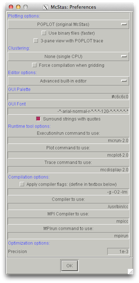

Today we are providing installation and patching help for McStas 2.0 on certain platforms, where there are specific issues we have recently become aware of. Three scripts/packages are provided on the "download share":
For those interested in trying out the development version, our daily builds are now available for Debian, OSX and Windows systems, see the nightly build webpage.
This week the McStas and VITESS teams are running a joint school in Berlin.
The material presented in the school is available here.
A bug was found in the "offline Perl module installation" below, please try again with the updated PPD zip file
This week the McStas and VITESS teams are running a joint school in Berlin.
The material presented in the school is available here.
What is not completely clear from the McStas install docs is that on the Windows platform, an active internet connection is required during installation.
To work around this, perform these steps before installing McStas itself:
postsetup.bat
Dear simulators!
The joint Vitess and McStas teams are planning a common simulation school and workshop this fall - scheduled for
September 18th-20th in the Berlin area.
A rough program of the three-day school is:
Sending us the email does not oblige you to participate. :-)
All the best from the combined Vitess and McStas teams!
An set of updated ESS source components for use with McStas 1.12c and 2.0 have been put in the download share.
The zip archive includes the following:
We hope to soon release McStas either a 2.0a or 2.1 which will include these as well as other improvements.
To make use of the package, you need an x3d browser on your system - we recommend Instant Player developed by the Fraunhofer Gesellschaft.
If you want to run a combination of our Python and Perl tools - have a look at File->Preferences in mcgui (see graphic below)
The allows you to define the commands executed from mcgui for running/compiling (mcrun), visualizing (mcdisplay) or plotting data (mcplot) from your instrument. The naming convention is this one (not completely obvious, sorry):
|  |
Unix (Linux / Mac OS):
Windows:
|
To save your preferences for the next McStas run, use File->Save configuration:
sudo apt-get install libtk-codetext-perl
sudo dpkg -i libtk-codetext-perl_0.3.4-1_all.deb
They are now back at http://www.mcstas.org/download/components/
I have further become aware that the McStas 2.0 distribution - at least in the debian packages - was missing a call to mcdoc for generating the same pages there
To remedy that problem, please:
cd /usr/local/lib/mcstas-2.0 sudo mcdoc -t- which should bring back the docs on your local machine.
I am working my way down a list of other annoyances and aim to release a McStas 2.0a with various issues fixed in a few weeks. Please let me know if you found any issue that I can correct in the next release.
./bootstrapIf you need to install somewhere else run
./bootstrap --prefix=/somewhere/else
maketo build and
make installto install CMake 2.8 or later.
tar xzf mcstas-2.0-src.tar.gz
cd mcstas-2.0-src
mkdir build && cd build
cmake ..- otherwise use
cmake -DCMAKE_INSTALL_PREFIX=/somewhere/else ..
makeand
make installas usual
mcstas-2.0-src.tar.gz and mcstas-comps-2.0-src.tar.gz
mcstas-tools-perl-2.0-src.tar.gz
mcstas-tools-python-mcrun-2.0-src.tar.gz and either mcstas-tools-python-mcplot-chaco-2.0-src.tar.gz or mcstas-tools-python-mcplot-matplotlib-2.0-src.tar.gz
svn co https://svn.mccode.org/svn/McCode/tags/mcstas-2.0instead of downloading the tar.gz's from the download page. Afterwards, use one or more of the
build_...scripts downloaded to the top level to build your own local version of McStas 2.0.
Should you ever want to build our current development version, check it out from our SVN at https://svn.mccode.org/svn/McCode/trunk and have a look at e.g. build_debs_mcstas in the top level. If you want a non-standard installation-prefix, please do a
export MCINSTALL_PREFIX=/some/path/somewherebefore running the build_ or mkdist scripts.
Also available here as a PDF.
As of today we provide package repositories for deb and rpm package driven Linux systems. To allow automatic update of your mcstas, mcstas-components and tools when new revisions are relased, follow these instructions:
On Debian class systems (including Ubuntu, mint etc.):
cd /etc/apt/sources.list.d sudo wget http://packages.mccode.org/debian/mccode.list sudo apt-get update
On RedHat class systems (including Scientific Linux, CentOS etc.):
cd /etc/yum.repos.d sudo wget http://packages.mccode.org/rpm/mccode.repo sudo yum update
After following these steps your package manager should now be aware of mcstas (example from Debian)
mcstas@debian:~$ apt-cache search mcstas mcstas-2.0 - mcstas built using CMake mcstas-comps-2.0 - mcstas-comps built using CMake mcstas-suite - A metapackage for McStas + perl and python tools mcstas-suite-perl - A metapackage for McStas + perl tools mcstas-suite-python - A metapackage for McStas + python tools mcstas-tools-2.0 - legacy-tools built using CMake mcstas-tools-python-mcplot-chaco-2.0 - python-tools-mcplot built using CMake mcstas-tools-python-mcplot-matplotlib-2.0 - python-tools-mcplot built using CMake mcstas-tools-python-mcrun-2.0 - python-tools-mcrun built using CMake
The new meta-packages mcstas-suite, mcstas-suite-perl and mcstas-suite-python allows you to install mcstas with one or both sets of tools (mcrun/mcplot etc.) by simple apt-get or yum commands like
Debian:
sudo apt-get install mcstas-suiteRedHat:
sudo yum install mcstas-suite-perl
Please report any trouble with the repositories to mcstas-users@mcstas.org.
Previous news items: 2012, 2011, 2010, 2009, 2008, 2007, 2006, 2005, 2004, 2003,2002, 2001, 2000, 1999, 1998.